@CBSNews
📝 原文: Bloody, bare footprints at Minneapolis murder scene lead to decadeslong search for answers
🇨🇳 译文: 明尼阿波利斯谋杀现场的血迹斑斑的脚印导致数十年来寻找答案

🕒 2026-08-02T08:00:00+00:00
| 来源 | 旧窗口内数量 | 本次新增 | 本次淘汰 | 当前窗口内共有 |
|---|---|---|---|---|
| 推文 + Dawn 新闻 | 0 | 36 | 0 | 36 |
| ARY News | 0 | 0 | 0 | 0 |
注：淘汰数 = 旧窗口内数量 + 本次新增 - 当前窗口内共有
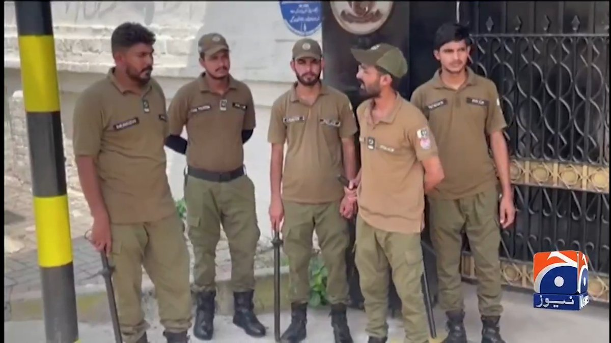
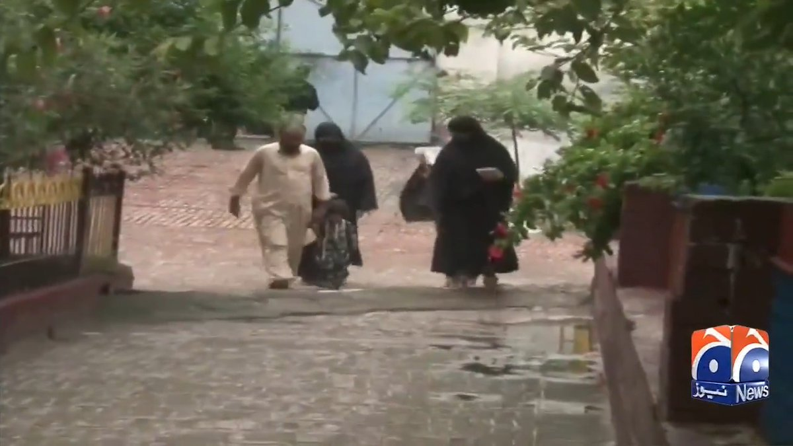
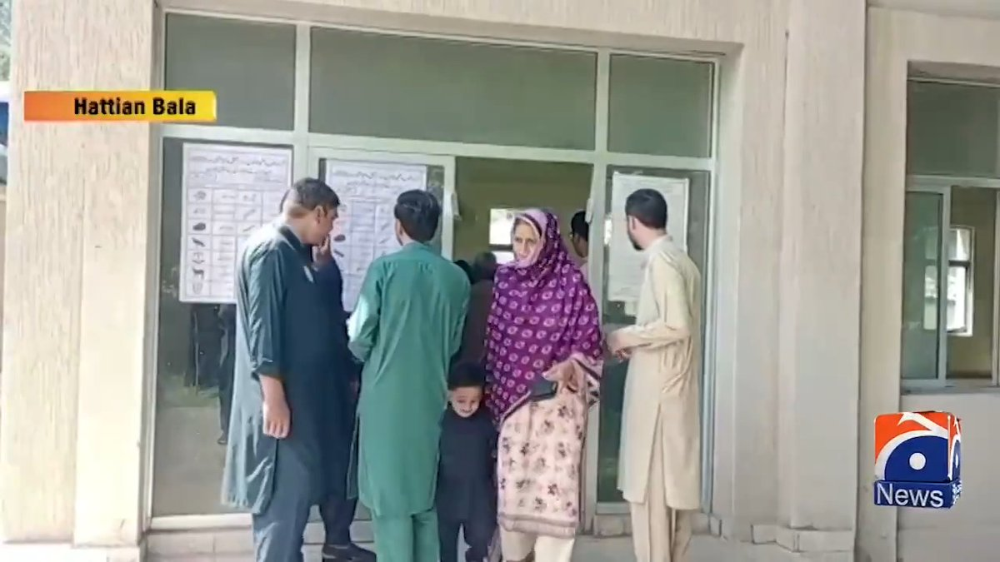
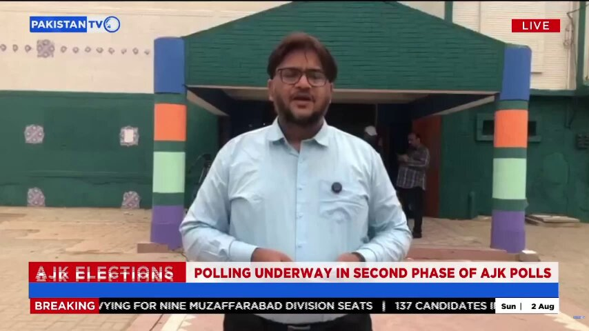
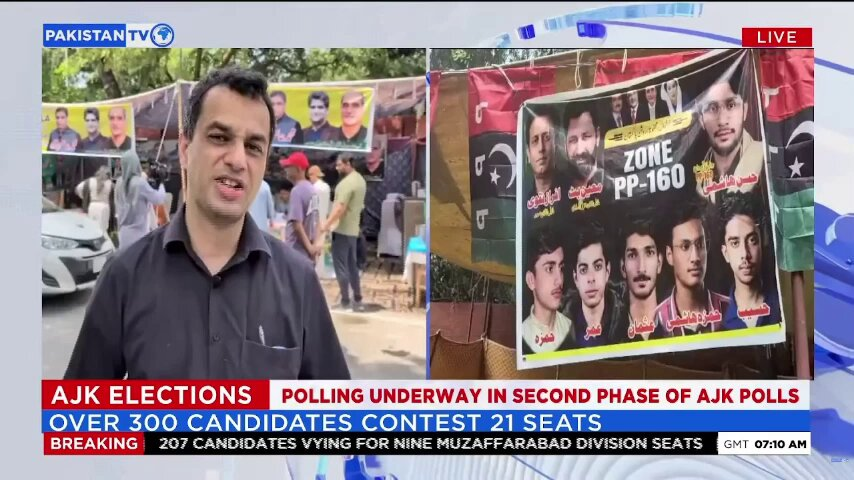
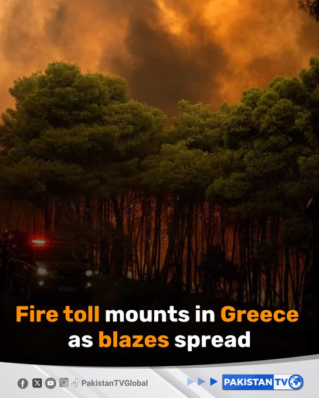
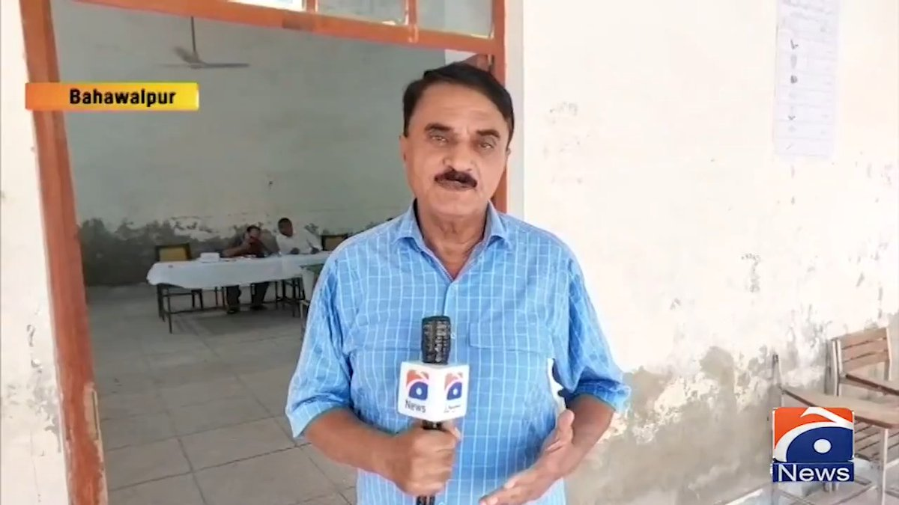
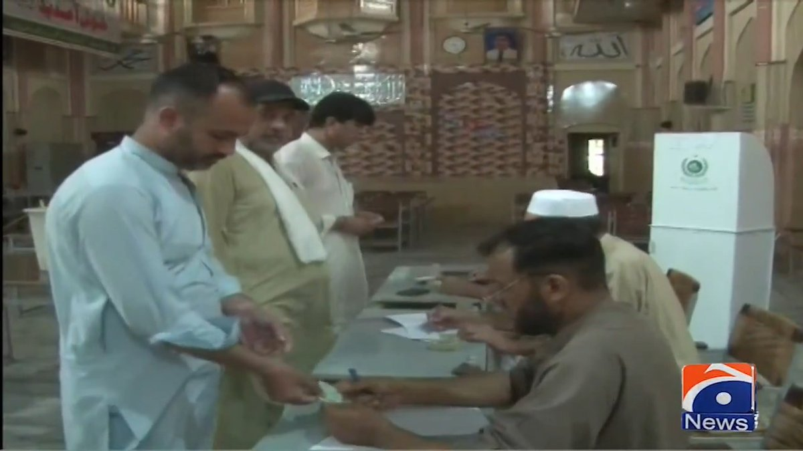
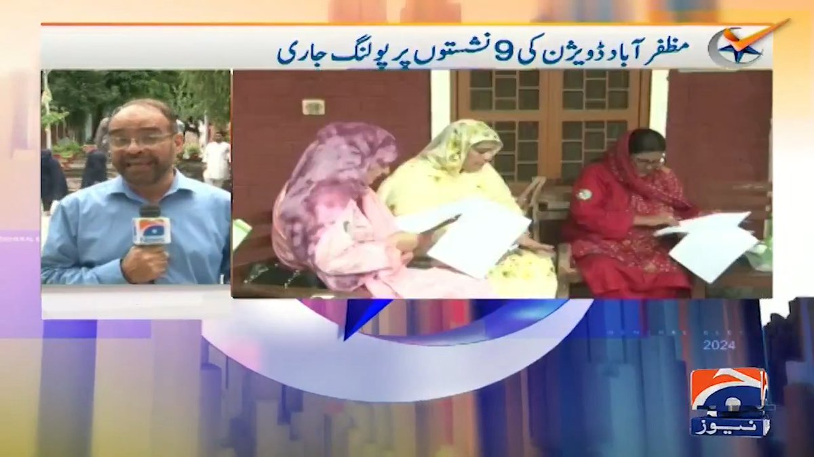
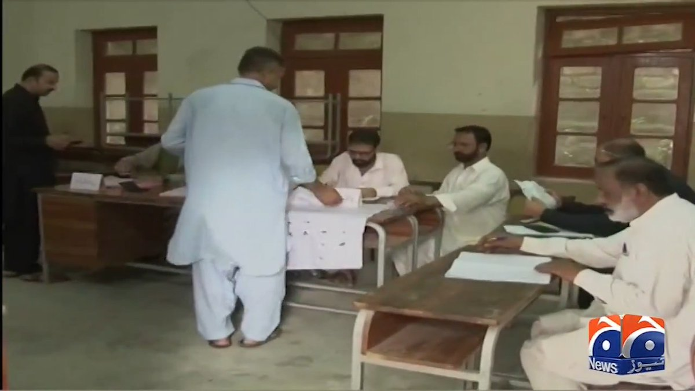


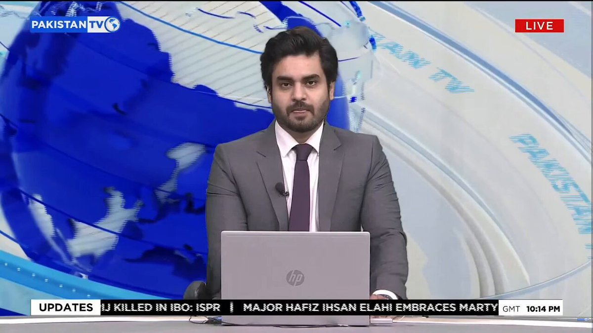
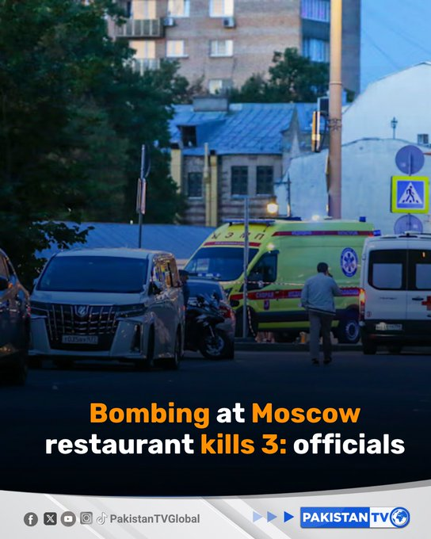


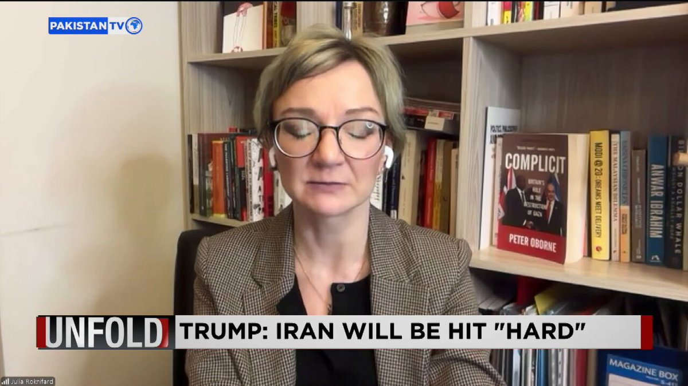
暂无文章。